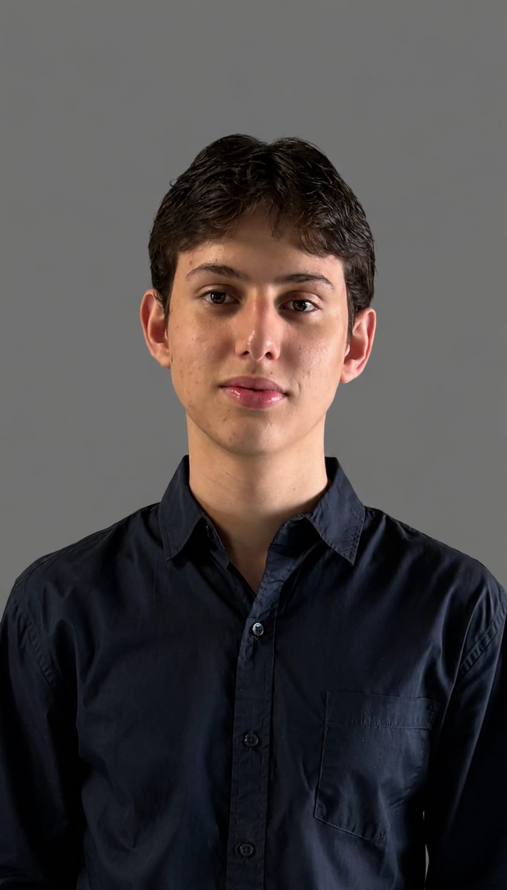

Olá, me chamo
Ricardo Amorim Bayma
Estudante de Ciências da Computação na CESAR School
Tenho 18 anos, estou no meu primeiro período da faculdade e venho aprendendo algumas linguagens de programação, como: Python, JavaScript, C, Html, CSS
Entre em contato